One of the deepest puzzles in physics is why the universe is dominated by matter, with almost no antimatter. Matter and antimatter should have been created in nearly equal amounts in the early universe and then annihilated almost completely — yet a tiny excess of matter, about one part in a billion, survived to form everything we see today (Figure 1). Leptogenesis offers an explanation: if neutrinos are Majorana particles — their own antiparticles — heavy Majorana neutrinos in the early universe could have decayed to generate a lepton asymmetry, which Standard-Model processes later converted into the matter–antimatter imbalance we observe. That same Majorana nature would reveal itself in a single rare nuclear decay.
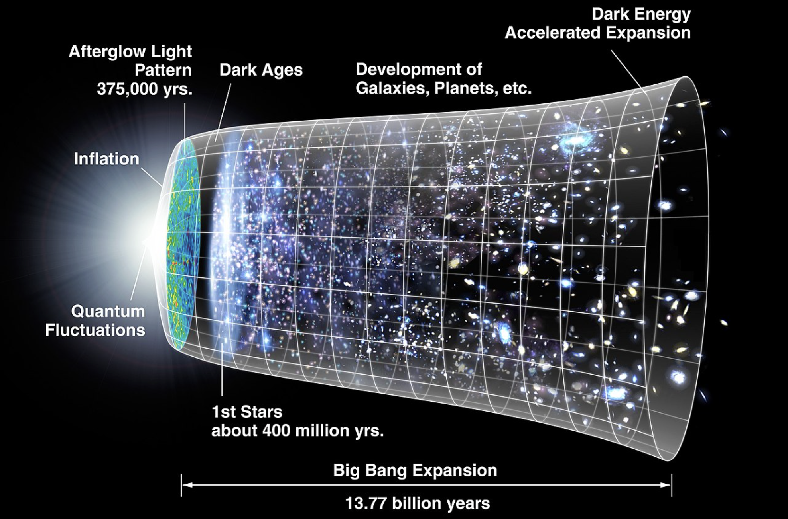
Figure 1. The history of the universe. A tiny matter–antimatter asymmetry in the early universe left behind the matter that makes up everything we see today; leptogenesis, enabled by Majorana neutrinos, is a leading explanation for how that asymmetry arose.Image: NASA / WMAP Science Team. Not subject to copyright (NASA media usage guidelines); credit required.
That decay is neutrinoless double beta decay. In some even–even nuclei, two neutrons convert into two protons at once, emitting two electrons. Every such double beta decay seen so far also releases two antineutrinos (2νββ) — a rare process still allowed by the Standard Model. If the neutrino is a Majorana particle, the same transition can happen with no neutrinos at all: neutrinoless double beta decay, 0νββ (Figure 2). It has never been observed.
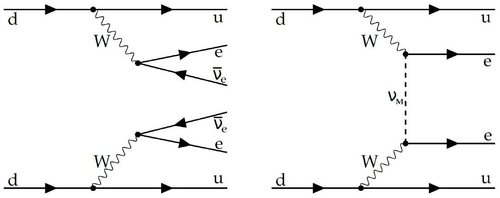
Figure 2. 2νββ (left) emits two antineutrinos; 0νββ (right) proceeds via light Majorana-neutrino exchange, with no neutrinos in the final state.
The two modes are told apart by the summed energy of the electrons (Figure 3): 2νββ gives a broad continuum, while 0νββ would appear as a single sharp line at the decay’s Q-value (Qββ ≈ 2039 keV for 76Ge). Detecting that line would prove lepton number is violated and bear on the matter–antimatter question above.
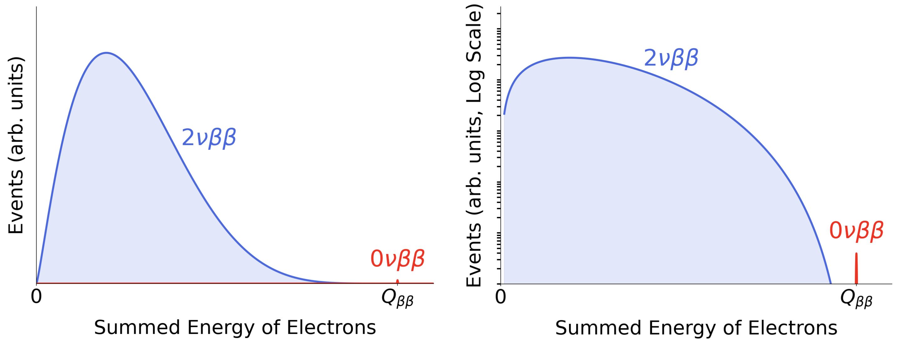
Figure 3. Summed electron energy: the 2νββ continuum versus the monoenergetic 0νββ peak at Qββ (linear, left; log, right). Not to scale.
The measured half-life maps onto the effective Majorana mass mββ. As Figure 4 shows, today’s searches are pushing toward the band predicted for the inverted mass ordering; LEGEND-1000 aims to cover it and reach into the normal-ordering region.
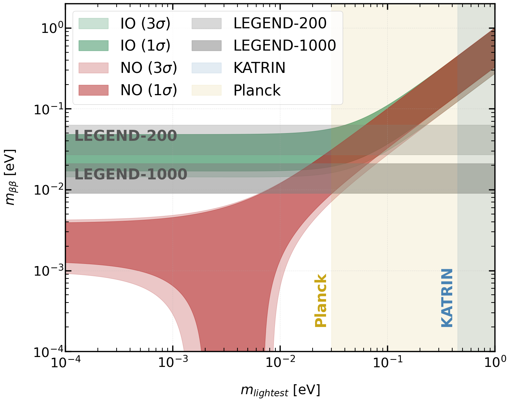
Figure 4. Effective Majorana mass vs lightest neutrino mass. Green = inverted ordering, red = normal; gray bands show the LEGEND-200 and LEGEND-1000 reach (NuFIT 6.0; KATRIN and Planck exclusions shown).
Many isotopes and detector technologies have been applied to this search — in past experiments, in those running now, and in others planned for the future (Figure 5). 76Ge stands out: germanium detectors have the best energy resolution (~0.1% at Qββ), the crystal is both source and detector, and no known background makes a peak near Qββ.
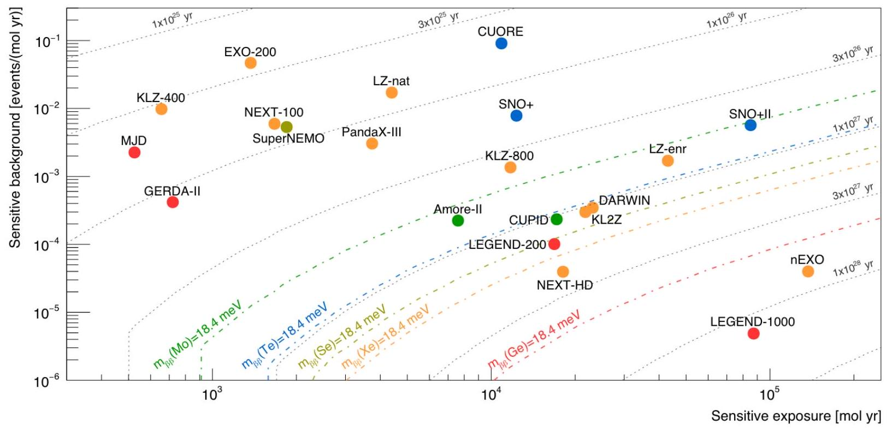
Figure 5. The 0νββ landscape — background vs exposure. Dashed lines mark discovery-sensitivity half-lives; LEGEND-1000 targets beyond 1028 yr.From M. Agostini, G. Benato, J. A. Detwiler, J. Menéndez and F. Vissani, arXiv:2202.01787 — Rev. Mod. Phys. 95, 025002 (2023). Licensed under CC BY 4.0.
The LEGEND experiment
LEGEND — the Large Enriched Germanium Experiment for Neutrinoless ββ Decay — searches for 0νββ in 76Ge, building on the earlier GERDA and MAJORANA Demonstrator programs. It runs deep under the Gran Sasso mountains in central Italy (Figure 6), where about 3600 m of water-equivalent rock overhead shields it from cosmic rays.
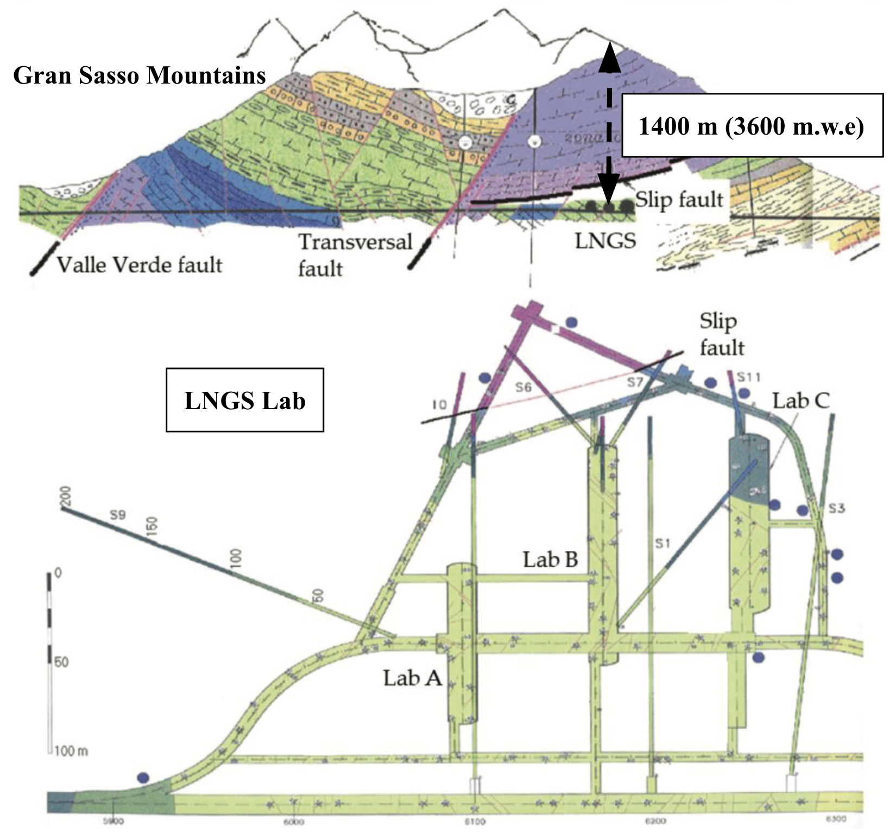
Figure 6. The LNGS underground laboratory beneath the Gran Sasso mountains: a geological cross-section (top) and the layout of the three experimental halls (bottom). LEGEND-200 is housed in Hall A; the future LEGEND-1000 will be sited in Hall C.Figure adapted from R. Guidotti & A. Castellani, “Tunnel Vaults under Seismic Excitation”, IntechOpen (2018), Fig. 3. Licensed under CC BY 3.0. LEGEND-200 and LEGEND-1000 labels added by the author.
Germanium detector strings hang inside a liquid-argon cryostat that itself sits in a large water tank (Figure 7). Liquid argon acts as both a passive shield and an active veto: particles scattering in it produce 127 nm scintillation light — shifted by TPB and green WLS fibers and read out by SiPMs. Figure 7 also zooms into a single detector string, showing the WLS fiber shrouds and an HPGe detector on its support plate.
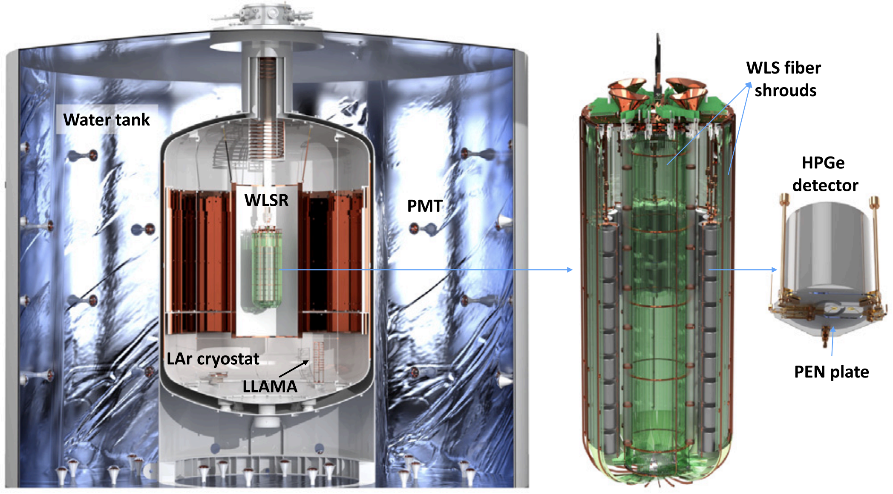
Figure 7. Left: the LEGEND-200 setup, with the germanium strings and wavelength-shifting reflector (WLSR) inside the liquid-argon cryostat, surrounded by the water-tank PMT veto. Right: a detector string showing the WLS fiber shrouds and a single HPGe detector on its PEN support plate.From N. Burlac (on behalf of the LEGEND Collaboration), Nucl. Instrum. Methods A1080, 170779 (2025). Licensed under CC BY 4.0.
LEGEND runs in two stages. LEGEND-200 (~200 kg of enriched 76Ge) has taken data since 2023 and targets half-lives near 1027 yr. Its first search, combined with GERDA and MAJORANA, set a limit of T1/2 > 1.9×1026 yr (90% C.L.), i.e. mββ < 75–200 meV. Background is beaten down by a layered veto — a muon veto, a multiplicity cut, pulse-shape discrimination, and the liquid-argon veto — whose effect on the spectrum is shown in Figures 8 and 9.
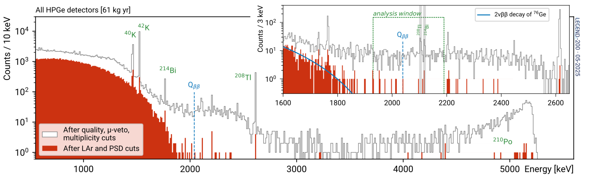
Figure 8. LEGEND-200 spectrum (61 kg·yr): white = after muon + multiplicity cuts; red = after adding the LAr and PSD cuts. Inset zooms on Qββ.Reproduced from Fig. 1 of H. Acharya et al. (LEGEND Collaboration), “First Results on the Search for Lepton Number Violating Neutrinoless Double-β Decay with the LEGEND-200 Experiment,” Phys. Rev. Lett.136, 022701 (2026), DOI: 10.1103/25tk-nctn; arXiv:2505.10440. Licensed under CC BY 4.0.
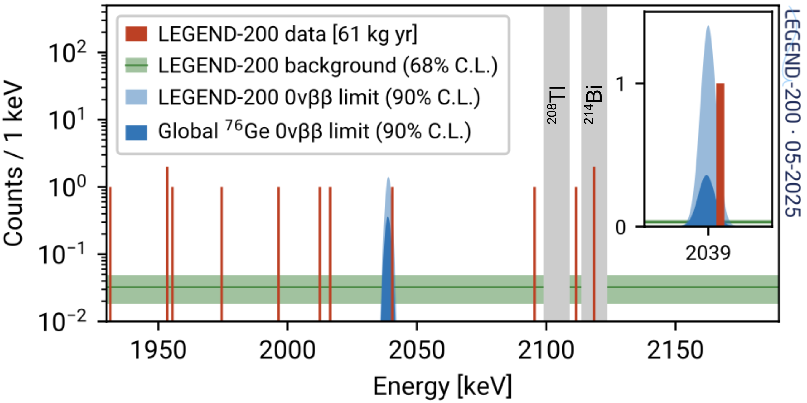
Figure 9. The Qββ analysis window; the dark line is the combined 76Ge limit with GERDA and MAJORANA.Adapted from Fig. 2 (top panel) of H. Acharya et al. (LEGEND Collaboration), “First Results on the Search for Lepton Number Violating Neutrinoless Double-β Decay with the LEGEND-200 Experiment,” Phys. Rev. Lett.136, 022701 (2026), DOI: 10.1103/25tk-nctn; arXiv:2505.10440. Licensed under CC BY 4.0. Changes: cropped to top panel.
LEGEND-1000 scales up to ~1000 kg and aims beyond 1028 yr, which demands another order-of-magnitude cut in background (Figure 10). Key upgrades: underground-sourced argon (far less 42Ar), an internal neutron moderator, and new light-guide fibers. Figure 11 shows the projected background and signal near Qββ from a Monte Carlo simulation.
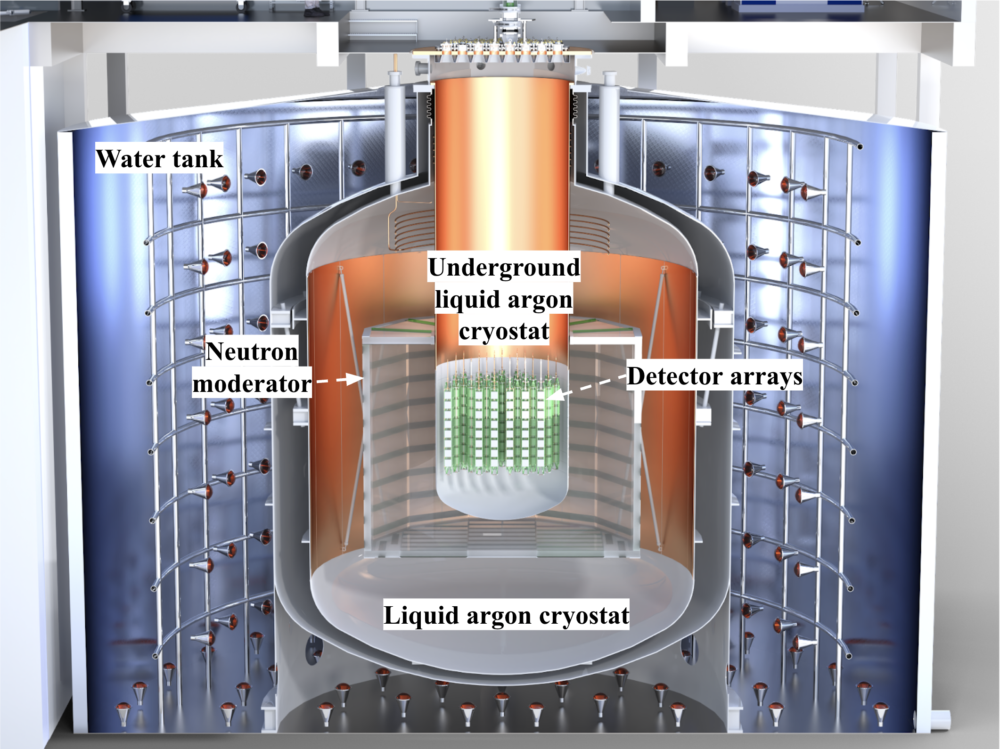
Figure 10. LEGEND-1000: germanium strings in underground-argon reentrant tubes, inside an argon cryostat with a neutron moderator, all within a water-Cherenkov veto.CAD rendering by P. Krause / LEGEND Collaboration, from the collaboration's internal wiki (legend-exp.atlassian.net/wiki), where the original is used in LEGEND-1000 design-overview documentation shared within the collaboration. Labels added by the author.
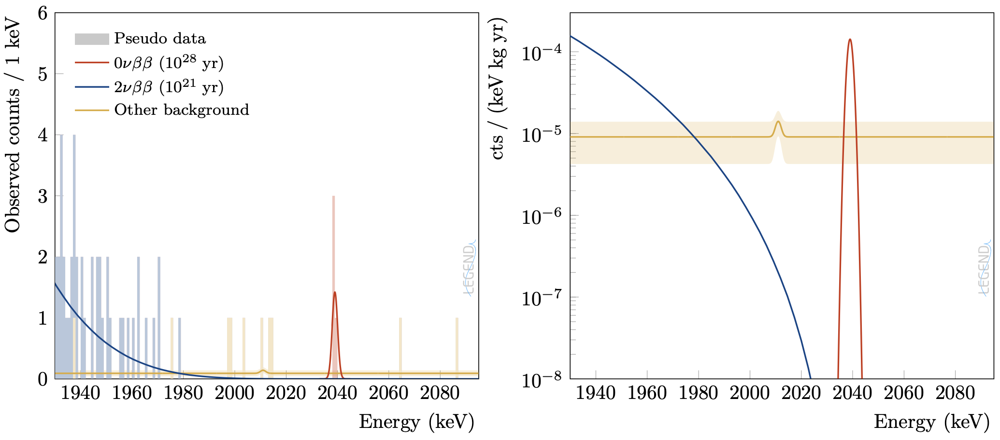
Figure 11. Projected LEGEND-1000 background and signal near Qββ from a Monte Carlo simulation, showing a hypothetical 0νββ peak at T1/2 = 1028 yr.From LEGEND Collaboration, arXiv:2107.11462 — LEGEND-1000 Preconceptual Design Report (2021). Licensed under CC BY 4.0.
Related papers
Response of wavelength-shifting and scintillating-wavelength-shifting fibers to ionizing radiationLead authorW. Bae et al., Journal of Instrumentation21 (2026) P03053.
Optical characterization of wavelength-shifting and scintillating-wavelength-shifting fibersLead authorW. Bae et al., Journal of Instrumentation21 (2026) P01027.
First results on the search for lepton-number-violating neutrinoless double beta decay with the LEGEND-200 experimentLEGEND Collaboration, Phys. Rev. Lett.136 (2026) 022701.
Direct dark-matter search · other rare event searches
Dark matter and WIMPs
The universe contains far more mass than we can see. Its gravity shapes how galaxies rotate, binds clusters together, and molds the large-scale structure of the cosmos — yet it emits no light and has never been detected directly. This dark matter accounts for about a quarter of the total energy budget of the universe (Figure 1), and identifying it is one of the central goals of modern physics.
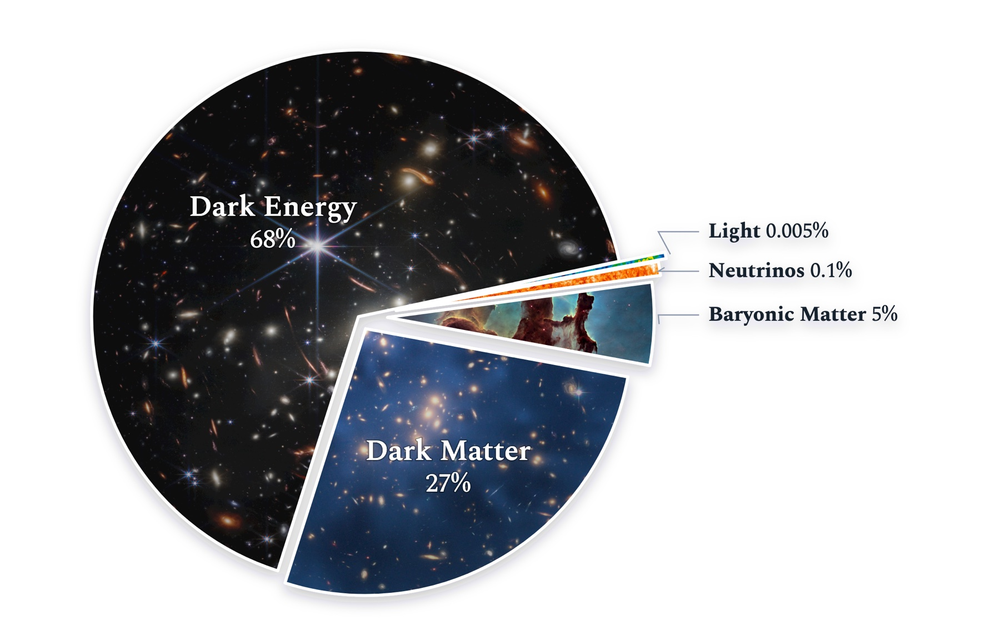
Figure 1. The energy budget of the universe: dark energy (Λ, 68%), dark matter (χ, 27%), and ordinary baryonic matter (B, 5%); neutrinos and photons make up the small remainder.Pie chart made for this site; values from M. Cirelli, A. Strumia and J. Zupan, Dark Matter, arXiv:2406.01705. Slice images: dark energy — NASA, ESA, CSA, and STScI (ESA/Webb); dark matter — NASA, ESA, M.J. Jee and H. Ford (Johns Hopkins University) (ESA/Hubble); baryonic matter — NASA, ESA, CSA, STScI; J. DePasquale, A. Koekemoer, A. Pagan (STScI) (ESA/Webb); all licensed under CC BY 4.0 and cropped to the slices. Neutrinos — NASA/SDO (AIA); light — NASA/WMAP Science Team (both public domain). The two thinnest slices are enlarged for visibility.
A leading candidate is the weakly interacting massive particle (WIMP) — a heavy, electrically neutral particle that barely couples to ordinary matter. If WIMPs exist, they should occasionally strike an atomic nucleus (Figure 2) and deposit a tiny amount of energy. Direct-detection experiments try to catch those rare recoils inside a shielded, ultra-quiet detector deep underground.
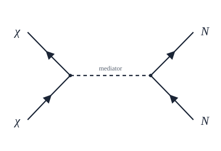
Figure 2. A WIMP (χ) scatters elastically off an atomic nucleus (N) by exchanging a mediator, transferring a small recoil energy — the signal that direct-detection experiments try to catch.
The LZ experiment
LUX-ZEPLIN (LZ) is one of the world’s most sensitive WIMP searches. It runs about 1.5 km underground at the Sanford Underground Research Facility (SURF) in South Dakota (Figure 3), where the rock overhead shields it from cosmic rays.
Figure 3. LZ operates about 1.5 km underground at the Sanford Underground Research Facility (SURF) in South Dakota.Illustration: Greg Stewart / SLAC National Accelerator Laboratory.
At its heart is a dual-phase xenon time projection chamber (TPC) holding seven tonnes of liquid xenon. When a particle scatters in the liquid it makes a prompt scintillation flash — the S1 signal. The ionization electrons it frees drift upward in an electric field into a thin gas layer, where they make a second, larger pulse — the S2 signal (Figure 4). Together, the S1–S2 delay gives the interaction’s depth, while the S1 and S2 light patterns give its horizontal position and energy; combining the S1 and S2 signals is what picks out the WIMP-like signal.
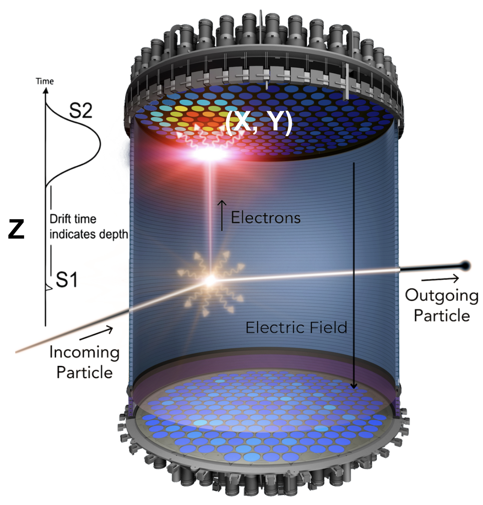
Figure 4. Dual-phase xenon TPC principle: a particle makes a prompt flash (S1); the freed electrons drift up and produce a second, larger flash (S2) in the gas.Adapted from LZ Collaboration, The Data Acquisition System of the LZ Dark Matter Detector: FADR, arXiv:2405.14732 — Nucl. Instrum. Meth. A 1068, 169712 (2024). Licensed under CC BY 4.0. Relabelled by the author.
Two arrays of photomultiplier tubes (PMTs) above and below the xenon collect this light (Figure 5, Figure 6). LZ wraps the TPC in nested vetoes: a xenon “skin” region that tags gamma rays, and an outer detector of gadolinium-loaded liquid scintillator that catches neutrons, and PMTs in the surrounding water tank that flag cosmic muons by their Cherenkov light.
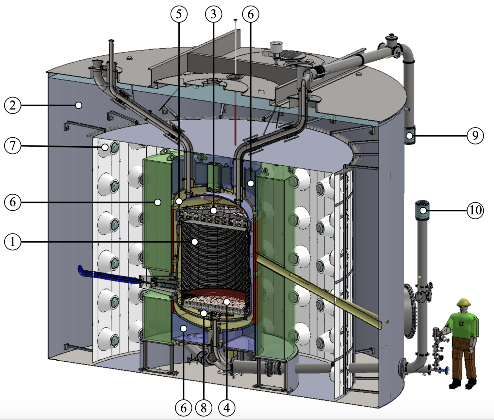
Figure 5. The LZ detector. A 7-tonne liquid-xenon TPC (1) sits at the centre of a water tank (2), viewed by top (3) and bottom (4) PMT arrays and held in a double-walled titanium cryostat (5). Gadolinium-loaded liquid scintillator (6) surrounds it, read out by its own PMTs (7) in the water; xenon-skin PMTs sit in the dome (8), and cabling leaves through the top (9) and bottom (10) conduits.From LZ Collaboration, The Data Acquisition System of the LZ Dark Matter Detector: FADR, arXiv:2405.14732 — Nucl. Instrum. Meth. A 1068, 169712 (2024). Licensed under CC BY 4.0.
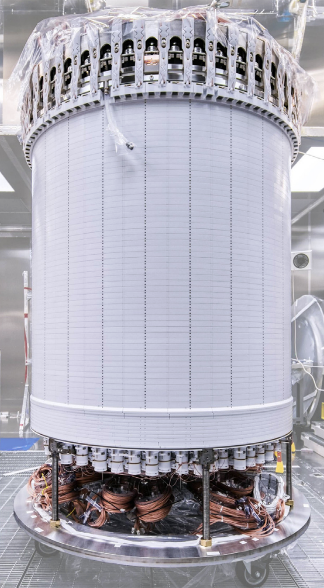
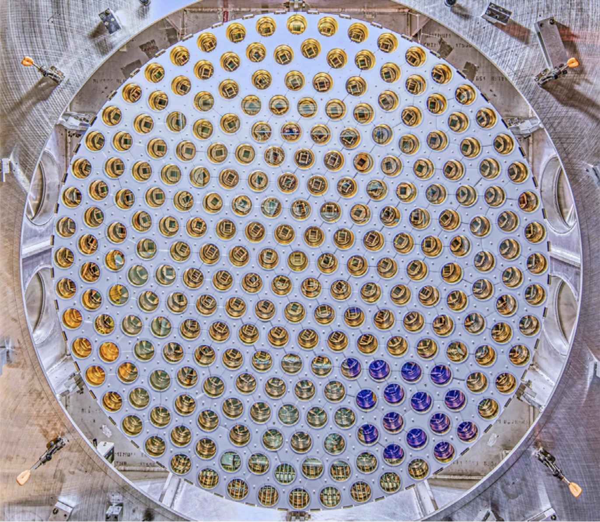
Figure 6. The assembled xenon detector (left) and its top PMT array viewed from above (right).Photos by Matthew Kapust, Sanford Underground Research Facility, used with permission. From D.S. Akerib et al., Nucl. Instrum. Methods A953, 163047 (2020), Figs. 2–3.
With this layered design, LZ has set among the world’s strongest limits on WIMP dark matter across a wide mass range (Figure 7).
Figure 7. LZ’s limit on the spin-independent WIMP–nucleon cross-section (WS2022 + WS2024) — among the world’s strongest across a wide range of WIMP masses.Reproduced from Fig. 5 of J. Aalbers et al. (LZ Collaboration), “Dark Matter Search Results from 4.2 Tonne-Years of Exposure of the LUX-ZEPLIN (LZ) Experiment,” Phys. Rev. Lett.135, 011802 (2025), DOI: 10.1103/4dyc-z8zf; arXiv:2410.17036. Licensed under CC BY 4.0.
Scintillator & wavelength-shifting materials
Detector material characterization
Scintillators and light-shifting materials are widely used in experimental particle and nuclear physics. Plastic scintillators form the trigger counters, hodoscopes, and calorimeter tiles of collider and fixed-target experiments, and the active planes of many neutrino and cosmic-ray detectors. Liquid scintillators instrument large neutrino observatories and fast-neutron spectrometers. Wavelength shifters convert hard-to-collect ultraviolet scintillation light into a detectable band in noble-liquid time projection chambers and calorimeters. Scintillating fibers build high-resolution tracking detectors and beam monitors. The same materials run throughout applied radiation detection as well — medical imaging, nuclear security, and space instrumentation.
This research program characterizes such materials — plastic and liquid scintillators, wavelength shifters, and scintillating and wavelength-shifting fibers (Figure 1).
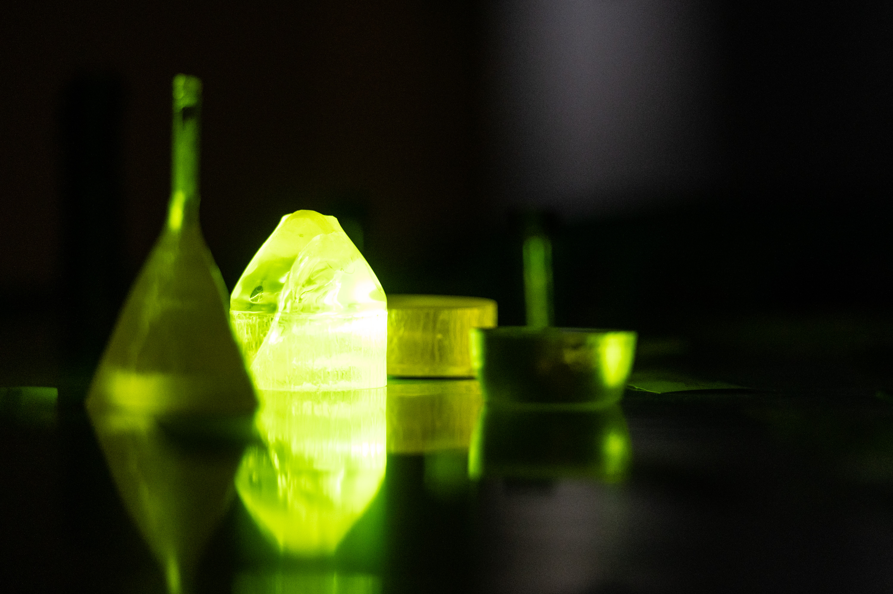
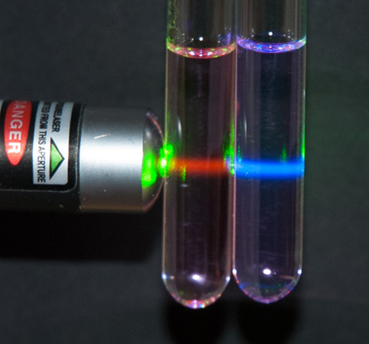
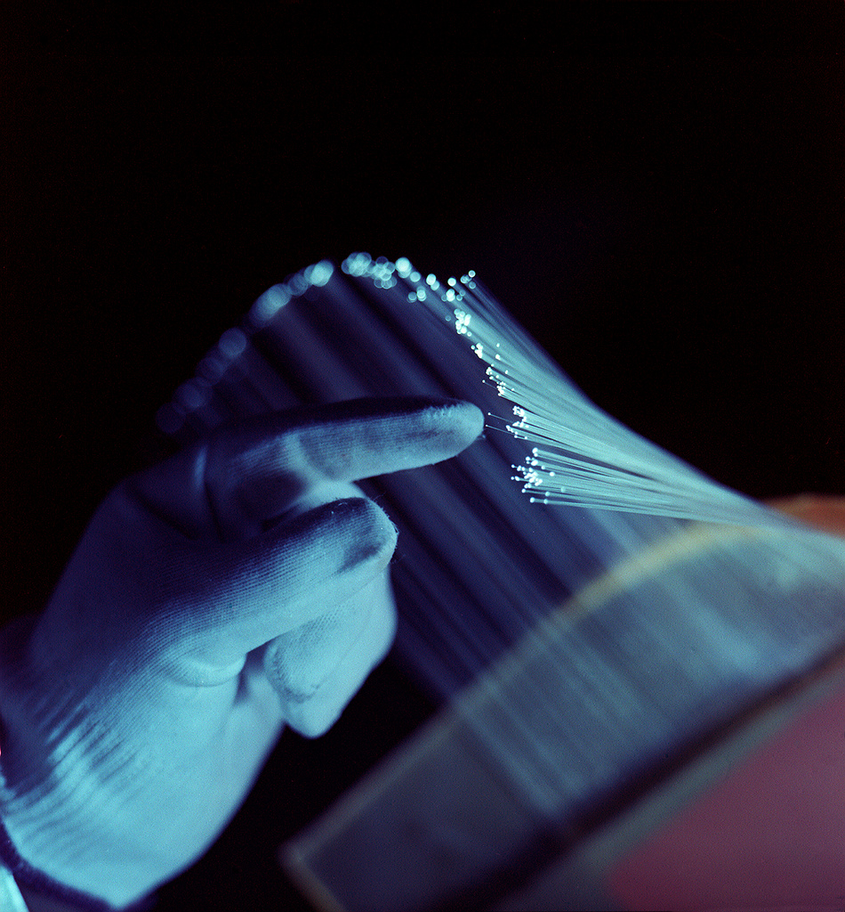
Figure 1. Representative optical materials in radiation detection: a scintillation crystal surrounded by packaged scintillation products (left), wavelength shifting in solution — Stokes emission in red and anti-Stokes emission in blue (centre), and scintillating glass optical fibres (right), where UV-induced fluorescence stands in for scintillation.Left: Scintillation crystal with packaged scintillation products by Saint-Gobain Crystals, via Wikimedia Commons, public domain. Centre: Stokes and anti-Stokes emission by Victor Gray, via Wikimedia Commons, CC BY-SA 4.0. Right: U.S. Department of Energy, via Wikimedia Commons, public domain. Cropped to a common aspect ratio.
The measurements span light yield, quenching factor, absorption and emission spectra, light attenuation length, pulse-shape-discrimination (PSD) capability, and how these vary with temperature and dopant concentration.
The aim is not a single material but a systematic, long-term survey: characterizing a broad library of candidates — hundreds of them over time — and reporting useful, reproducible benchmarks to the research community and to industry.
These benchmarks also benefit large rare-event search programs, whose veto detectors rely on well-understood light-collection materials. The characterization setup is compact — a light or radiation source, the material under test, and a DAQ system — and an excellent platform for training students across the full arc of an experiment, from hardware to analysis.
Case study: scintillating and wavelength-shifting fibers
Plastic scintillating and wavelength-shifting (WLS) fibers have been used since the 1980s — WLS fibers in MINOS, NOvA, GERDA, and LEGEND-200, scintillating fibers in DØ and the LHCb SciFi Tracker. Near ultra-low-background detectors, though, fiber choice is set by radiopurity as much as by optical performance, since radio-impurities in the fiber itself generate background radiation. Scintillating-wavelength-shifting (Sci-WLS) fibers, a recently developed class, are attractive because they add scintillation to wavelength shifting and light guiding — raising the possibility of self-tagging fiber-borne backgrounds in a veto, which is valuable for rare-event searches such as LEGEND-1000.
Two papers benchmark these fibers: their optical behaviour — emission and absorption spectra, attenuation length — in Bae et al., JINST 21, P01027 (2026), and their response to ionizing radiation, the signal that makes self-tagging possible, in Bae et al., JINST 21, P03053 (2026).
Related papers
Response of wavelength-shifting and scintillating-wavelength-shifting fibers to ionizing radiationLead authorW. Bae et al., Journal of Instrumentation21 (2026) P03053.
Optical characterization of wavelength-shifting and scintillating-wavelength-shifting fibersLead authorW. Bae et al., Journal of Instrumentation21 (2026) P01027.
Response of wavelength-shifting and scintillating-wavelength-shifting fibers to ionizing radiationLead authorW. Bae et al., Journal of Instrumentation21 (2026) P03053.
Optical characterization of wavelength-shifting and scintillating-wavelength-shifting fibersLead authorW. Bae et al., Journal of Instrumentation21 (2026) P01027.
First results on the search for lepton-number-violating neutrinoless double beta decay with the LEGEND-200 experimentLEGEND Collaboration, Phys. Rev. Lett.136 (2026) 022701.
Interaction position, time, and energy resolution in organic scintillator bars with dual-ended readoutM. Sweany et al. (incl. W. Bae), Nucl. Instrum. Methods Phys. Res. A927 (2019) 451–462.
LEGEND experiment and fiber studiesEljen Technology (scintillator manufacturer), Texas, USA · 2023, 2024, 2025
Fiber studies for next-generation 0νββ searches in the LEGEND experimentHEAP seminar, University of California, Los Angeles, USA · 2025
Conference talks
Fiber studies to improve the liquid-argon detector for LEGEND-1000APS Meeting (USA) & KPS Meeting (South Korea), with Eljen Technology representatives · 2025
Fiber studies for the LEGEND experimentLEGEND collaboration meetings · 2023, 2024, 2025, 2026
Basic science is funded mainly by governments — in other words, by taxpayers. In the United States, the federal government spends tens of billions of dollars on basic research each year. In fiscal year 2025, that amounted to about $45 billion—roughly $130 per person.
That money could be used elsewhere. It could pay for more scholarships for students who cannot afford college, another care center for people with disabilities, or someone's hospital bill. There are many places where a dollar can ease suffering right now. So why do we use this money to try to answer questions that may not seem useful in everyday life? For example, how do stars die? How do unstable subatomic particles decay? What is the faint light left from the universe's first moments?
I think there are two reasons.
We do not know where discovery will lead
Investing in basic science is like searching for new continents. Some expeditions discover continents rich in iron ore. Others find only empty continents of ice. But centuries later, a huge oil field may be discovered beneath that ice. Even a voyage that finds no valuable land can give us better compasses, better ships, and better maps. These tools help everyone who explores after us.
The history of basic science shows this pattern again and again. Quantum mechanics began with scientists asking what happens inside an atom. No one expected it to make money. But this curiosity led to the transistor. Transistors led to the semiconductor industry, and that industry gave us modern electronic devices. Today, semiconductors are used in smartphones, cars, satellites, CT scanners, industrial robots, solar power, artificial intelligence, and quantum computers.
The World Wide Web began in the same way. Physicists at CERN built a simple tool to share experimental data. That small tool is now the nervous system of modern society.
Space research also brings benefits to life on Earth. Weather and communication satellites are direct uses of space technology. Technologies developed for space research have also helped create or improve products on Earth: technology developed to make spacecraft cameras smaller and more energy-efficient is used in the CMOS image sensors in phone cameras, rocket-engine flow research helped improve heart-assist pumps, and precise GPS technology developed for space research helped tractors steer themselves. These benefits show how knowledge and tools can find uses far beyond their original goals.
It tells us what we are
But the possibility that basic science may bring economic rewards someday is only part of the answer. It affirms the very value of human existence.
The universe is about 13.8 billion years old. The roots of human civilization go back around 12,000 years, to early farming communities. Compared with the universe, Earth is smaller than a speck of dust. Human life lasts only a moment in the history of the universe — we are here, then gone. Yet humans, who live only briefly on this tiny planet, have measured the age and size of the universe and are coming to understand how it began and took shape.
To see how remarkable this is, reverse the scale. Imagine a tiny, single-celled creature like a paramecium, curious about the world around it. It begins to explore and learn, passing what it learns to the next generation. Each generation adds to that knowledge. Eventually, these creatures discover that Earth spins and travels around the Sun. They understand why the Sun rises and sets, and how Earth’s tilted axis, as Earth moves around the Sun, causes the seasons to change. It may sound impossible, but this is what humanity is doing as we try to understand the universe.
What we inherited, and what we will pass on
We inherited our civilization from past generations. We stand on thousands of years of human effort. Now it is our turn to add a little more and pass it on.
Investing in basic science is one way we join this relay. We carry on the aspirations of past generations, move a little further forward in our own lives, and pass them on to the next generation. Human dreams never end.
How does a quantum computer work, and how far along are we? (in progress)
Science News · 2026-10-17
Start with the rule that makes it all work. In everyday life a ball is in one place and a lamp is either on or off. In the quantum world, a particle such as an electron or a photon has no single position — and no single energy — until it is measured. Before that it is in a superposition: all its possible states at once, each with its own chance. A measurement always finds just one, picked at random by those chances; repeat the experiment enough times and the results pile up in the shape of the chances. This is not just our ignorance of a hidden spot: the possibilities interfere like waves, adding up or cancelling out, which a position fixed all along could never do.
Superposition. Before a measurement the particle is spread over many places (an atom, over its low and high energy levels); each measurement finds it in just one, at random, and many repeats reproduce the chances.Illustration made for this site.
Two particles can also share a single superposition: they become entangled. Take a pair whose spins — a tiny built-in magnet that reads ‘up’ or ‘down’ when measured — must come out opposite. Neither has its own direction yet. Send one to each end of the galaxy and measure: each result on its own is a coin toss, yet whenever A reads ‘up’, B reads ‘down’, every time, however far apart they are. Careful with the wording, though: nothing flies between them, and B doesn’t ‘change’ when A does. B alone still looks random, so no message can be sent this way, and nudging A after the measurement does nothing to B; the link shows up only when the two lists of results are compared. Nor were the answers fixed in advance, like a pair of gloves split into two boxes. Experiments testing Bell’s inequality ruled that out — work recognised with the 2022 Nobel Prize in Physics (Nobel Prize, 2022) and confirmed without loopholes in 2015 (Hensen et al., 2015) — and entangled photons sent from a satellite to two ground stations 1,200 km apart stayed linked (Yin et al., 2017). Quantum computers use entanglement to tie their qubits into one shared state.
Entanglement. Each side’s results look like coin tosses, yet compared pair by pair they are always opposite — at any distance, though no signal passes between them.Illustration made for this site.
From quantum rules to a quantum computer
An ordinary computer stores everything as bits, each a 0 or a 1. A quantum computer uses qubits — tiny physical systems such as an atom or a superconducting circuit that, until measured, can be in a blend of 0 and 1 at once. Link many qubits together and the number of blends they can hold grows exponentially: 300 qubits can represent more states than there are atoms in the visible universe. The trick of a quantum algorithm is to arrange those states so that wrong answers cancel out, like out-of-step waves, and the right answer stands out when you finally measure.
A quantum algorithm starts with every answer at once, makes the waves of wrong answers cancel and those of the right answer add up, so that a measurement almost always gives the right one.Illustration made for this site.
A worked example: finding 5 among 8
Say the answer we want is 5 — written in binary as 101 — hidden among the eight three-digit combinations 000 to 111. An ordinary computer’s three bits are three switches, each charged or not, so they hold exactly one combination at a time; it has to try them one by one, about four tries on average. Three qubits are three physical objects — atoms or circuits that can sit in a blend of their lower and upper energy levels, or photons spread across two channels — and together they carry a number, called an amplitude, for every one of the eight combinations at once. An amplitude can be positive or negative, like the height of a wave, and the chance of reading a combination is its amplitude squared.
Top: three ordinary bits hold one combination at a time, so they are checked one by one. Bottom: three qubits — energy levels, photon channels or polarisation — hold all eight combinations at once until a measurement reads out one, here 1·0·1 = 5.Illustration made for this site.
At the start all eight amplitudes are equal, so every answer has the same 12.5% chance. The search method published by Lov Grover in 1996 then repeats two steps (Grover, 1996). The first is a check. The check circuit doesn’t know the answer; it only knows the rule an answer must satisfy — say, “does this number open the lock?” Because the qubits hold all eight combinations at once, a single pass through the circuit tests all eight together, and it marks the one that passes, 101, by flipping the sign of its amplitude to negative. Why not simply read the answer out at this point? Because a measurement now would return just one of the eight at random — each with 12.5% — and wipe out the rest. The mark is also invisible to a measurement, since squaring removes the sign, so the probabilities are still 12.5% each. But the mark is there, and the next step turns it into a large probability.
The second step reflects every amplitude around the average. It doesn’t need to know the answer either: it is the same fixed set of gates for every problem. After the sign flip, the average is (7 × 0.354 − 0.354) ÷ 8 = 0.265. Each amplitude jumps to the other side of that average, the same distance away. A wrong answer sat 0.089 above the average, so it lands 0.089 below it, at 0.177. The marked 101 sat 0.619 below the average, so it lands 0.619 above it, at 0.884 — a 0.884² = 78% chance, and the seven wrong answers share the remaining 22%, so the total is still 100%. The flip pushed 101 far from the average, and the reflection turns that distance into height. A second round lifts it to 94.5%, and then we measure.
One round of quantum search: the check flips 101’s sign, then every amplitude is reflected around the average (green line), so 101 grows from 12.5% to 78%. Two rounds give 94.5%; more rounds overshoot. The best number of rounds grows only as the square root of the number of possible answers.Illustration made for this site.
More rounds don’t help: each round turns the state a fixed step towards the answer, and too many turn it past. The best number is about 0.785 × √N rounds for N possible answers. One pass through the check circuit costs roughly what one check costs on an ordinary computer — it is the same rule, built as a circuit — so the saving is in how many checks are needed: for a million possibilities, about 785 rounds instead of about 500,000 checks.
Every step is built from gates — the basic operations on qubits, playing the role of an ordinary chip’s logic gates (AND, OR, NOT: the operations that turn 0s and 1s into other 0s and 1s). A quantum gate does more: it can also change a qubit’s blend of 0 and 1 and the sign, or timing, of its amplitudes. Physically a gate is a precisely timed microwave or laser pulse, or a beam splitter for photons, and two-qubit gates link qubits so that their amplitudes become entangled. Not every problem gets faster, though: it has to have structure that interference can exploit — something easy to check, as here, or a hidden pattern such as the period that Shor’s factoring algorithm finds.
What is it good for?
Not for everyday computing — your laptop will stay a laptop. The promise is narrower and deeper: simulating molecules and materials, whose behaviour is itself quantum and which classical computers approximate badly; some optimisation problems; and breaking the encryption that protects today’s internet. That last one is why governments care. In May 2025, Google’s Craig Gidney estimated that a machine with under a million noisy qubits could crack a 2048-bit RSA key in about a week — down from the 20 million qubits of his 2019 estimate (Gidney, 2025).
Has one done anything useful yet? Not quite. In October 2025, Google’s Willow chip ran a physics measurement 13,000 times faster than the Frontier supercomputer could, and — unlike the 2019 “quantum supremacy” demonstration — the result can be checked (Google Quantum AI, 2025). It was a step toward measuring molecular structure, not a product. IBM’s stated goal is a demonstrated advantage on a useful problem by the end of 2026; that hasn’t happened yet.
An IBM Quantum System One at IBM’s Yorktown Heights lab. The golden “chandelier” is a dilution refrigerator that cools the superconducting chip at the bottom to about 0.01 K.Photo: OJB Quantum, via Wikimedia Commons, CC BY 4.0. Resized.
Physical qubits vs logical qubits
Here’s the catch. Qubits are fragile: a stray bit of heat or a wobble in a laser flips them, and today’s best hardware makes an error roughly once every 1,000 operations. A useful calculation needs billions. The fix, known since the 1990s, is quantum error correction: spread one unit of information across many physical qubits so that errors can be detected and undone. The protected unit is a logical qubit. The numbers in headlines — 105 qubits, 1,000 qubits — are almost always physical qubits. What matters for real computing is how many logical qubits a machine has, and how rarely they fail.
The turning point came in December 2024. Google showed on its 105-qubit Willow chip that making the error-correcting code (the rule for storing information redundantly across many physical qubits) bigger made the logical qubit better — the first time that had worked below the “threshold” where correction helps rather than hurts. Its largest code used 101 physical qubits for a single logical qubit, with a logical error of 0.14% per cycle, halving each time the code grew a step (Acharya et al., 2025). In October 2026 the same team made “magic states” — a special ingredient needed for the logical operations that correction alone can’t provide — at 99.99% fidelity, about 40 times better than before (Google Quantum AI, 2026). Only a fraction of attempts succeed, so the states are still expensive.
Top: many noisy physical qubits are combined into one logical qubit, and the milestones of 2024–2026. Bottom: the four main ways to build a qubit, and what each is good and bad at.Illustration made for this site.
Four ways to build a qubit
Superconducting circuits (Google, IBM). The qubit is a tiny electrical circuit on a chip, cooled to about 0.01 K in a dilution refrigerator. Gates are fast — tens of nanoseconds — and fabrication borrows from the chip industry, which is why this platform has the best error-correction results so far. The downsides: the deep cold, bulky wiring, qubits that lose their state within about a tenth of a millisecond, and chips where each qubit talks only to its neighbours. Longer or diagonal links are possible, but each link is a real wire on the chip that adds noise and cross-talk and competes for space with control lines, and standard error correction needs only the four neighbours on a grid. IBM’s roadmap bets on more efficient codes that do need some long links, testing on-chip couplers to cut the overhead, aiming for “Starling”, a 200-logical-qubit machine, in 2029 (IBM, 2025).
Superconducting qubits are tiny circuits on a chip, cooled to 0.01 K at the bottom of a dilution refrigerator. They are fast, but each qubit is wired only to its neighbours.Illustration made for this site.
Trapped ions (Quantinuum, IonQ). Single charged atoms are held in an electric trap and nudged with lasers. They are the most accurate qubits around — Quantinuum’s Helios, launched in November 2025 with 98 barium ions, reports two-qubit gates at 99.92% — and any ion can be paired with any other, because the ions repel one another and line up like beads on a spring: the whole chain vibrates together, and lasers aimed at just two ions briefly load their qubit values onto that shared vibration and take them back, leaving only those two entangled (Quantinuum, 2025). In March 2026 the company reported 48 error-corrected logical qubits on Helios (Quantinuum, 2026). The weakness is speed and scale: gates take microseconds to milliseconds, and nobody has yet shown how to go much beyond a few hundred ions.
Trapped ions float in a line, held by electric fields. Laser pulses flip and link them, and because the whole chain vibrates together, any two ions can be linked.Illustration made for this site.
Neutral atoms (Harvard/QuEra, Atom Computing, Pasqal). Uncharged atoms are held in a grid of laser “tweezers” and can be shuffled around mid-calculation. The appeal is numbers: arrays of 6,100 atoms have been trapped (Wang et al., 2026), and in 2025 a Harvard–MIT team kept a 3,000-atom array running for over two hours by continuously reloading atoms — previously a run had to stop whenever atoms were lost (Chiu et al., 2025). The same groups showed error correction below threshold with 448 atoms and ran algorithms on up to 96 logical qubits (Bluvstein et al., 2025). Gates are slower than superconducting ones and atoms escape, but this platform currently holds the record for logical qubits.
Neutral atoms are held one by one in a grid of laser tweezers. Atoms can be moved during a calculation, and lost ones refilled from a reservoir.Illustration made for this site.
Photons (PsiQuantum, Xanadu). The qubit is a particle of light travelling through waveguides on a silicon chip — at room temperature, made in ordinary chip factories, and easy to link between machines by optical fibre. In 2025 Xanadu’s Aurora connected 35 chips and 13 km of fibre into a 12-qubit machine (Aghaee Rad et al., 2025), and PsiQuantum reported its “Omega” chipset with 99.98% state-preparation fidelity (Alexander et al., 2025). Two things hold it back. Photons leak away — scattered by tiny roughness in the channels, or lost where chips meet fibres and in detectors that miss some of them. And photons don’t interact with each other, so a two-qubit gate has to be built from interference plus a measurement; such a gate succeeds only part of the time, and when it fails it must be tried again. No photonic machine has yet demonstrated a logical qubit. Both companies target fault tolerance around 2028–2029 (The Quantum Insider, 2026).
A photonic qubit is a photon in one of two channels on a silicon chip. Chips are easy to make and to link by fibre, but photons get lost on the way.Illustration made for this site.
Photons carry no electric charge, so they don’t interact with each other; photonic machines link them by interference instead. When two identical photons reach a half-mirror at the same moment, the two ways they could leave on opposite sides — both passing through, or both bouncing — cancel, so they always leave together (Hong, Ou & Mandel, 1987) — the same cancellation that makes the dark stripes in the double-slit experiment. The photons themselves are made in entangled pairs: a laser shone through a crystal produces two photons whose properties are linked from the start.
Photons don’t push on each other, so a photonic machine links them with two tricks: interference at a half-mirror, and ‘fusion’, which measures two photons and leaves their partners entangled — about half the time.Illustration made for this site.
Fusion is how pairs are stitched together. Start with four photons in two pairs, 1a–1b and 2a–2b. Photons 1b and 2a meet at a half-mirror and are detected, which uses them up; when the detectors click the right way, 1a and 2b are now entangled, though they never met. In practice small clusters of several photons are fused rather than pairs: each fusion uses up one photon from each cluster, and all the rest join one bigger web. Repeated over millions of photons, this builds one huge entangled web, a ‘cluster state’, and the computation is then done simply by measuring its photons one by one (Bartolucci et al., 2023).
So how far along are we?
The honest summary: every platform has crossed from “can we build qubits?” to “can we correct them?”, and the answer, as of 2026, is yes — in the tens of logical qubits, with heavy overhead and tricks such as discarding failed runs. A useful machine needs hundreds to thousands of logical qubits with error rates a million times lower than today’s physical ones; breaking RSA needs roughly a million physical qubits running for days. Company roadmaps put the first fault-tolerant machines around 2029. Those are promises, not results.
Bottom line. Quantum computers are real, and in 2025–2026 they learned to correct their own errors. But they are still laboratory machines with a few dozen reliable qubits; the useful ones are years away, and the “break the internet” ones further still.
Sources
R. Acharya et al. (Google Quantum AI), “Quantum error correction below the surface code threshold,” Nature638, 920–926 (2025). doi.org/10.1038/s41586-024-08449-y
Google Quantum AI and Collaborators, “Observation of constructive interference at the edge of quantum ergodicity,” Nature646, 825–830 (2025). doi.org/10.1038/s41586-025-09526-6
D. Bluvstein et al., “A fault-tolerant neutral-atom architecture for universal quantum computation,” Nature (2025). doi.org/10.1038/s41586-025-09848-5
N.-C. Chiu et al., “Continuous operation of a coherent 3,000-qubit system,” Nature646, 1075–1080 (2025). doi.org/10.1038/s41586-025-09596-6
J. Wang et al., “Neutral Atom Quantum Computing: Principles, Routes, Progress, and Challenges,” arXiv:2608.05010 (2026). arxiv.org/abs/2608.05010
H. Aghaee Rad et al. (Xanadu), “Scaling and networking a modular photonic quantum computer,” Nature638, 912–919 (2025). doi.org/10.1038/s41586-024-08406-9
K. Alexander et al. (PsiQuantum), “A manufacturable platform for photonic quantum computing,” Nature (2025). doi.org/10.1038/s41586-025-08820-7
C. Gidney, “How to factor 2048 bit RSA integers with less than a million noisy qubits,” arXiv:2505.15917 (2025). arxiv.org/abs/2505.15917
L. K. Grover, “A fast quantum mechanical algorithm for database search,” Proceedings of the 28th ACM Symposium on Theory of Computing, 212–219 (1996); arXiv:quant-ph/9605043. arxiv.org/abs/quant-ph/9605043
B. Hensen et al., “Loophole-free Bell inequality violation using electron spins separated by 1.3 kilometres,” Nature526, 682–686 (2015). doi.org/10.1038/nature15759
J. Yin et al., “Satellite-based entanglement distribution over 1200 kilometers,” Science356, 1140–1144 (2017). doi.org/10.1126/science.aan3211
C. K. Hong, Z. Y. Ou and L. Mandel, “Measurement of subpicosecond time intervals between two photons by interference,” Physical Review Letters59, 2044–2046 (1987). doi.org/10.1103/PhysRevLett.59.2044
Stir cream into your coffee and you’re watching one of the hardest problems in mathematics. Those swirls obey the Navier–Stokes equations, about two centuries old. The open question: in three dimensions, can a perfectly smooth flow suddenly “blow up,” reaching infinite speed in a finite time? Real fluids can’t move infinitely fast, so a blow-up would mean the equations themselves break down at that point. It’s one of the Clay Mathematics Institute’s seven Millennium Prize Problems — $1 million each.
Top: about 10,000 AI agents found the proof in 88 hours; checking it in Lean took 17 more. Below: in a gentle, smooth flow, a vortex tube is stretched like spaghetti; it gets thinner and spins faster until, at time t*, its speed blows up to infinity.Illustration made for this site, based on the description in OpenAI’s announcement. Not to scale.
On 8 September 2026, OpenAI announced an answer: yes, it can blow up (OpenAI, 2026). The proof came from an internal AI model that isn’t available to the public — about 10,000 AI agents working for 88 hours. The result was then checked step by step in Lean, a program that verifies proofs — which took another 17 hours.
Case closed?
The proof hasn’t been peer-reviewed. The Clay Institute says the problem “has apparently been settled,” but its review is “deliberately unhurried” (Clay Mathematics Institute, 2026). No prize has been awarded, and OpenAI says it won’t claim one. In October, a preprint argued that the Lean proof doesn’t actually match the written one (Bastounis et al., 2026). And there’s a credit fight: hours before OpenAI’s announcement, Tristan Buckmaster of NYU and Levent Alpöge posted their own Lean-checked results on closely related equations (Buckmaster, 2026) — not a proof of the Millennium Problem itself, but an important clue on the way to one. Brown University mathematician Javier Gómez-Serrano told NPR the Lean code compiled and the community seems to accept the result (NPR, 2026).
Bottom line. An AI produced a machine-checked proof that a forced version of the Navier–Stokes equations can blow up — a real milestone. But it isn’t peer-reviewed yet, and no prize has been awarded.
A. Bastounis, F. Circelli and A. C. Hansen, “Navier-Stokes lost in translation: Why Lean verification of AI autoformalisation does not guarantee correct natural language proofs,” arXiv:2610.08144 (2026). arxiv.org/abs/2610.08144
Everything you’ve ever seen — stars, planets, people — makes up only about 15% of the matter in the universe. The rest is invisible “dark matter.” We know it’s there from its gravity, but it has never been directly detected.
What the universe is made of: dark energy (Λ, 68%), dark matter (χ, 27%) and ordinary matter (B, just 5%) — everything we have ever seen.Pie chart made for this site; values from M. Cirelli, A. Strumia and J. Zupan, Dark Matter, arXiv:2406.01705. Slice images: dark energy — NASA, ESA, CSA, and STScI (ESA/Webb); dark matter — NASA, ESA, M.J. Jee and H. Ford (Johns Hopkins University) (ESA/Hubble); baryonic matter — NASA, ESA, CSA, STScI; J. DePasquale, A. Koekemoer, A. Pagan (STScI) (ESA/Webb); all licensed under CC BY 4.0 and cropped to the slices. Neutrinos — NASA/SDO (AIA); light — NASA/WMAP Science Team (both public domain). The two thinnest slices are enlarged for visibility.
LZ is built to change that. Nearly a mile under South Dakota, it watches seven tonnes of liquid xenon for the faint flash of a dark-matter particle bumping into an atomic nucleus.
The real thing: LZ’s assembled xenon detector (left) and its top array of light sensors seen from above (right).Photos by Matthew Kapust, Sanford Underground Research Facility, used with permission. From D.S. Akerib et al., Nucl. Instrum. Methods A953, 163047 (2020), Figs. 2–3.
On 1 September 2026, LZ reported a surprise: one event, at an energy of about 248 keV — well above where most dark-matter searches look, in a region where known backgrounds are expected to be very low (LZ Collaboration, 2026).
How a hit shows up: a particle makes a quick flash in the liquid xenon (S1); the electrons it knocks loose drift up into the gas and make a second, bigger flash (S2).Adapted from LZ Collaboration, The Data Acquisition System of the LZ Dark Matter Detector: FADR, arXiv:2405.14732 — Nucl. Instrum. Meth. A 1068, 169712 (2024). Licensed under CC BY 4.0. Relabelled by the author.
So… is it dark matter?
The scientists’ own answer: not yet. “We are not claiming to have seen dark matter,” said LZ spokesperson Rick Gaitskell (Berkeley Lab, 2026). After accounting for having searched in many places at once, the event’s significance is 2.6σ (3.4σ at most for a single model). By convention, physicists call 3σ “evidence” and need 5σ to claim a discovery. Put simply: if only known backgrounds were present, a result at least this striking would turn up by chance about 0.5% of the time.
More reasons for caution: one event is not a pattern, and the paper hasn’t been peer-reviewed yet. If it were dark matter, the particle would be heavy — likely more than about 200 times the mass of a proton — and would interact in a more complex way than the simplest models predict.
The next step is simple: keep watching. LZ is still taking data. If the signal is real, more events like it should appear. If not, this one will quietly fade into the background.
Bottom line. No, we haven’t discovered dark matter. LZ saw one surprising event that known backgrounds struggle to explain — worth watching, not yet worth celebrating.
Sources
D. S. Akerib et al. (LZ Collaboration), “Search for dark matter particle interactions in an extended nuclear recoil energy window with the LUX-ZEPLIN (LZ) experiment,” arXiv:2609.02823 [hep-ex] (2026), submitted to Phys. Rev. Lett.arxiv.org/abs/2609.02823
Some of the biggest AI labs and well-funded research groups are pointing the same machine-learning tools that power chatbots at whales, dolphins, birds and elephants. Can AI actually translate what animals are saying? The short answer: it is getting surprisingly good at finding structure in animal sounds, and it has begun to link a few sounds to meanings — but nobody has a translator, and nobody has held a conversation.
Whales: an alphabet with no dictionary
Sperm whales talk in codas — short bursts of clicks, like Morse code. Project CETI, a team of marine biologists, linguists and AI researchers working off Dominica, analysed about 8,700 codas from some 60 whales and found that they are built from combinable features: rhythm, tempo, and small variations it calls “rubato” and “ornamentation”. That makes a much bigger repertoire than anyone had counted, which the team likened to a phonetic alphabet (Sharma et al., 2024). In November 2025 a linguist on the project, Gašper Beguš, reported that the clicks within a coda also carry two distinct vowel-like tones, which he labelled “a” and “i”, plus diphthong-like glides (Beguš et al., 2025). What the codas mean, though, nobody knows: “We don’t understand the meaning yet,” he said.
A sperm whale mother and calf off Mauritius. Sperm whales live in families that share their own dialects of codas.Photo: Gabriel Barathieu, via Wikimedia Commons, CC BY-SA 2.0. Cropped and resized.
Dolphins: shared whistles — and an AI that babbles back
Bottlenose dolphins are known for signature whistles that work like names. In 2025 a team led by Laela Sayigh at Woods Hole studied the other half of their whistles, using five decades of recordings from known dolphins off Sarasota, Florida. They found whistle types shared by many dolphins; in playback experiments one made dolphins turn away, like an alarm. The work won the first $100,000 Coller Dolittle Prize (WHOI, 2025). In April 2025 Google released DolphinGemma, a small language model trained on decades of Atlantic spotted dolphin recordings from the Wild Dolphin Project in the Bahamas. Like a chatbot predicting the next word, it predicts the next sound, which helps researchers spot recurring patterns (Google, 2025). It generates dolphin-like sounds; it doesn’t know what they mean.
An Atlantic spotted dolphin, the species whose decades of recordings trained Google’s DolphinGemma.Photo: Bmatulis, via Wikimedia Commons, CC BY 3.0. Resized.
Birds: grammar, meaning — and crows that whisper
Birds have given the clearest evidence so far that animal sounds carry meaning. Japanese tits call “ABC” to warn of danger and “D” to say “come here”; play them “ABC-D” and they scan and approach, but reverse it to “D-ABC” and they mostly don’t — the order matters, a rule like grammar (Suzuki et al., 2016). In 2025 Julie Elie at UC Berkeley used machine learning and years of observation to build a dictionary of 11 zebra finch call types — aggression, hunger, bonding and so on. Trained to tell them apart, the birds confused calls that meant the same thing even when they sounded very different, and almost never confused calls that sounded alike but meant different things. The finches, in other words, hear meaning, not just sound (Elie et al., 2025). The study won the 2026 Coller Dolittle Prize (Jeremy Coller Foundation, 2026).
Crows are famously clever, but their conversations are hard to record. In Spain, researchers fitted 52 wild carrion crows with 12.5-gram audio tags; an AI detector built by the Earth Species Project picked out more than 127,000 calls. Most were not the familiar loud caw but soft, close-range calls that ordinary microphones miss (Baglione et al., 2025). The same non-profit has released NatureLM-audio, an open AI model that identifies species and call types, and a generative model that has kept up real-time vocal exchanges with live zebra finches for 48 hours (Earth Species Project, 2025). Parrots remain the only animals known to answer simple questions in human words — the lifelong work of Irene Pepperberg, who received the prize’s lifetime award in 2026.
A pair of zebra finches. Their 11 call types turned out to be sorted by meaning, not by how they sound.Photo: Keith Gerstung, via Wikimedia Commons, CC BY 2.0.
Elephants and monkeys call each other by name
Machine learning has also uncovered names. In Kenya, a model trained on wild African elephants’ rumbles could tell which elephant a call was meant for more often than chance; when researchers played calls back, elephants responded more to calls addressed to them. Unlike dolphins, which imitate each other’s whistles, the elephants seem to use arbitrary labels — as we do (Pardo et al., 2024). The same year, a team in Jerusalem found that marmoset monkeys’ “phee” calls carry a name-like signal for the monkey being addressed, and that marmosets respond more when they hear their own (Oren et al., 2024).
Dogs: a speech model listens to barks
In 2024 a University of Michigan team took an AI model trained on human speech and fine-tuned it on barks from 74 dogs. It could sort barks by context — playful, aggressive, and so on — and by breed and sex, but only about 70% of the time at best. It recognises the situation, not a sentence (Abzaliev et al., 2024).
From animal sounds to translation in four steps. AI has mastered the first, reached the second for a few species, and taken the first steps on the third. Nobody has reached the fourth.Illustration made for this site.
So, can AI translate?
Not yet, and maybe not in the way the word suggests. Translation needs a shared world to point to: we can match “dog” with “chien” because both mean the same animal. AI can find patterns in whale clicks without help, but attaching meaning still takes years of patient fieldwork — watching what animals do when they make each sound, and playing sounds back to see how they react. Animals may also not have “sentences” at all; their communication may be closer to calls tied to situations, plus a few names and rules. The Coller Dolittle Challenge still offers a grand prize of $500,000 in cash or a $10 million investment to the first team whose animal communicates with them without realising it is talking to humans (Jeremy Coller Foundation, 2026). It remains unclaimed.
Bottom line. AI is already a superb listener: it can sort animal calls, find their structure, and help show that some calls carry meaning and even names. A translator — let alone a conversation — is still out of reach.
Sources
P. Sharma et al. (Project CETI), “Contextual and combinatorial structure in sperm whale vocalisations,” Nature Communications15, 3617 (2024). doi.org/10.1038/s41467-024-47221-8
G. Beguš, R. L. Sprouse, A. Leban, M. Silva and S. Gero, “Vowel- and Diphthong-Like Spectral Patterns in Sperm Whale Codas,” Open Mind9, 1849–1874 (2025). doi.org/10.1162/OPMI.a.252
Woods Hole Oceanographic Institution, “Researchers awarded for identifying first evidence of possible language-like communication in dolphins,” 16 May 2025. www.whoi.edu/press-room/news-release/dolphin-award
T. N. Suzuki, D. Wheatcroft and M. Griesser, “Experimental evidence for compositional syntax in bird calls,” Nature Communications7, 10986 (2016). doi.org/10.1038/ncomms10986
J. E. Elie et al., “Categorical and semantic perception of the meaning of call types in zebra finches,” Science389, 1210–1215 (2025). doi.org/10.1126/science.ads8482
V. Baglione et al., “Capturing vocal communication in a free-living corvid: high-resolution data from low-impact miniaturized tags,” Animal Cognition28, 85 (2025). doi.org/10.1007/s10071-025-02018-0
M. A. Pardo et al., “African elephants address one another with individually specific name-like calls,” Nature Ecology & Evolution8, 1353–1364 (2024). doi.org/10.1038/s41559-024-02420-w
G. Oren et al., “Vocal labeling of others by nonhuman primates,” Science385, 996–1003 (2024). doi.org/10.1126/science.adp3757
A. Abzaliev, H. Pérez Espinosa and R. Mihalcea, “Towards Dog Bark Decoding: Leveraging Human Speech Processing for Automated Bark Classification,” LREC-COLING 2024; arXiv:2404.18739. arxiv.org/abs/2404.18739
Can we back up a human inside a computer?
Science News · 2026-06-18
Save your game before the boss fight, and you can always reload. Some futurists ask: could we do the same for humanity — copy every brain into a computer, so our minds survive even if we don’t? The idea has a name: whole-brain emulation, or “mind uploading.”
It isn’t new. Oxford’s Anders Sandberg and Nick Bostrom drew up a roadmap back in 2008 (Sandberg & Bostrom, 2008).
From brain to copy: slice and scan the brain, trace its wiring, then try to run that wiring on a computer — would the copy be you? Below: neurons in a fruit-fly brain versus a human brain.Illustration made for this site. Not to scale.
How close are we?
Closer than you’d think — for a fly. In 2024 the FlyWire team finished the complete wiring diagram of an adult fruit-fly brain: 139,255 neurons joined by 54.5 million synapses (Dorkenwald et al., 2024). Scientists have also reconstructed about a cubic millimetre of mouse cortex and of human cortex — specks the size of a grain of sand.
The complete wiring map of an adult fruit-fly brain: each of its roughly 140,000 neurons is shown in a different colour.From Fig. 1a of S. Dorkenwald et al. (FlyWire Consortium), Nature 634, 124 (2024). Licensed under CC BY 4.0. Cropped.
What have people done with a digital fly brain?
Once the wiring diagram was out, people started running it. In 2024 a Berkeley team built a deliberately simple simulation that copied all 127,000 neurons and 50 million connections. Each cell was just a tiny unit that fires once enough input piles up, and only a single number was tuned by hand. Yet when they switched on the model’s sugar-sensing cells, the motor neurons that push out the proboscis fired — the virtual fly stuck out its tongue. Touching the antennae set off the grooming circuit, too. Checked against living flies, 91% of 164 predictions held up (Shiu et al., 2024).
The same year, a team at the Janelia Research Campus took the wiring of the fly’s visual system — 64 cell types — as the fixed structure of a neural network and trained it only to read motion from videos. Cell by cell, the model then behaved like the real thing, down to which direction of motion each neuron prefers, matching 26 experimental studies (Lappalainen et al., 2024). In 2025 Google DeepMind and Janelia added a fly body that walks and flies inside a physics engine (Vaxenburg et al., 2025). It isn’t connected to the wiring diagram yet; joining brain and body is the next step.
Now scale up. A human brain has about 86 billion neurons — some 600,000 times a fly’s. And a wiring diagram isn’t a mind: it leaves out the chemistry, how strong each connection is, and how connections change as we learn. The wiring of the worm C. elegans, with just 302 neurons, was mapped back in 1986.
So when? In a 2025 survey of 312 neuroscientists, the typical respondent gave even odds of emulating a human brain by about 2125 — and only a 10% chance by 2075 (Zeleznikow-Johnston et al., 2025). Then come the harder questions: would the copy be you, or a stranger with your memories? Could it feel anything? When MIT’s McGovern Institute asked six of its researchers this September, they split on whether it could work, whether a copy could be conscious, and whether we should try at all (Pryor, 2026).
Bottom line. Brain mapping is real and moving fast. Backing up a human mind — let alone humanity — is still speculation, probably many decades away, perhaps a century, and nobody knows whether the copy would really be us.
A. Zeleznikow-Johnston, E. F. Kendziorra and A. T. McKenzie, “What are memories made of? A survey of neuroscientists on the structural basis of long-term memory,” PLOS One20, e0326920 (2025). doi.org/10.1371/journal.pone.0326920
S. Dorkenwald et al. (FlyWire Consortium), “Neuronal wiring diagram of an adult brain,” Nature634, 124–138 (2024). doi.org/10.1038/s41586-024-07558-y
P. K. Shiu et al., “A Drosophila computational brain model reveals sensorimotor processing,” Nature634, 210–219 (2024). doi.org/10.1038/s41586-024-07763-9
J. K. Lappalainen et al., “Connectome-constrained networks predict neural activity across the fly visual system,” Nature634, 1132–1140 (2024). doi.org/10.1038/s41586-024-07939-3
R. Vaxenburg et al., “Whole-body physics simulation of fruit fly locomotion,” Nature643, 1312–1320 (2025). doi.org/10.1038/s41586-025-09029-4
“AI robot” used to mean a humanoid in a film. Today it mostly means something less photogenic: a machine whose eyes are cameras and whose decisions come from learned models rather than hand-written rules. By that definition AI robots already drive taxis, run warehouses and spray fields. Here is where each kind stands in September 2026, and what separates the ones that work from the ones that don’t.
Robotaxis
This is the most visible success. Waymo, owned by Google’s parent Alphabet, was giving about 500,000 paid driverless rides a week by March 2026 across ten US cities — up tenfold in under two years — with a fleet of roughly 3,000 cars (TechCrunch, 2026). Its own safety data, covering 271 million miles with no one at the wheel through June 2026, show about 95% fewer serious-injury crashes and 82% fewer airbag-deploying crashes than human drivers on the same streets (Waymo, 2026). Those figures are Waymo’s, not a regulator’s, and federal investigators are looking at how its cars behave around school buses and at vehicles that get stuck and block traffic. In China, Baidu’s Apollo Go passed 20 million cumulative rides and 300,000 a week in some 27 cities (CnEVPost, 2026), and began commercial service in Dubai in April (WAM, 2026). Tesla’s robotaxi, by contrast, runs a few dozen unsupervised cars in Texas (The Next Web, 2026).
A Waymo Jaguar I-Pace driving itself through San Francisco in 2023 — nobody in the driver’s seat.Photo: Dllu, via Wikimedia Commons, CC BY 4.0. Resized.
Warehouses
The least glamorous robots are the most numerous. Amazon passed one million robots in its warehouses in July 2025 — mostly flat drive units that carry whole shelves to human pickers — and now coordinates them with DeepFleet, a generative-AI traffic model that it says makes the fleet about 10% faster (TechCrunch, 2025). Its newer Vulcan arm has a sense of touch and can pick items from crowded bins. Humanoids have been tested moving empty totes, but the work that runs at scale is done by machines that look nothing like us.
Farms
On farms the AI is in the sprayer, not the tractor. John Deere’s See & Spray mounts cameras along the spray boom; at up to 15 mph they recognise weeds and open only the nozzles above them. Deere says the system covered more than 5 million acres in 2025 and cut non-residual herbicide use by about half, saving some 31 million gallons of spray mix (Robotics & Automation News, 2025). Those are the company’s numbers. Fully driverless tractors are arriving more slowly: autonomy kits for tillage, the simplest field job, began shipping for the 2026 season.
Military drones
The war in Ukraine has made small drones the most consequential AI robots on Earth, and the AI’s role there is specific: terminal guidance. A pilot flies the drone most of the way and confirms the target; software then steers the final approach, which matters because jamming often cuts the radio link in the last few hundred metres. Guidance modules cost a few hundred dollars, and Ukraine’s Brave1 defence cluster counts dozens of companies building them — now also for interceptor drones that hunt Russian Shaheds (The Defender, 2026). The limits are physical — cloud and glare defeat the cameras, most thermal sensors are low-resolution — and the makers themselves call the technology “not yet widespread”. A human still chooses what to hit.
A drone operator of Ukraine’s 148th Artillery Brigade with an FPV drone. On many such drones, AI now flies only the last stretch.Photo: Ministry of Defense of Ukraine, via Wikimedia Commons, CC BY 4.0. Resized.
Robot dogs
Boston Dynamics has put about 2,000 of its Spot quadrupeds to work, and more than 60 US and Canadian bomb squads and SWAT teams now use them to look at suspicious packages and walk into standoffs; one was shot during a 2024 standoff in Massachusetts (MSN/Bloomberg, 2025). Prices start around $75,000–100,000. Most Spots do duller jobs — reading gauges in factories, inspecting power plants. In August 2026, US immigration enforcement (ICE) filed plans to spend up to $2 million on Spots for “officer safety”, reviving civil-liberties objections (Boston Globe, 2026). The dogs walk brilliantly; what they do when they arrive is still mostly carrying a camera.
A Royal Air Force airman meets a Spot robot during an exercise at RAF Leeming, 2021.Photo: Senior Airman John Ennis, US Air Force, via Wikimedia Commons. Public domain. Resized.
Humanoids
The robots that look like us are the furthest behind. The best-documented case is BMW’s plant in Spartanburg, South Carolina: Figure AI’s Figure 02 spent almost 11 months in the body shop helping to build more than 30,000 X3s, and in June 2026 its successor, Figure 03, moved to a logistics hall where it pulls parts from bins and sorts them onto a trolley, driven by Figure’s own vision-language-action model, Helix 02 (Figure, 2026). It runs four to five hours per charge, so a second robot takes over while it recharges; BMW says the aim is to learn, not to hit a number of units (Automotive Logistics, 2026). Tesla has not published production figures for Optimus. The AI underneath is improving fast — Google DeepMind’s Gemini Robotics 1.5, released in September 2025, plans a task in words before acting and transfers skills between robot bodies — but it is available only to selected partners (Google DeepMind, 2025).
What they’re good at — and what they aren’t
Good at: repeating a task in a structured space where the objects are known (shelves, totes, crop rows); driving on mapped city streets, with remote staff on call for the rare stuck car; seeing — spotting a weed, a package, a target, a pedestrian; and going where people shouldn’t, to patrol or inspect.
Not yet: hands — grasping unfamiliar, thin or soft objects is still the hardest problem in robotics, which is why warehouse arms pick with suction cups and the humanoid at BMW sorts only rigid parts.
Where each kind of AI robot stands in September 2026, and what they already do well versus what still needs work.Illustration made for this site.
Bottom line. AI robots are already at scale where the world is tidy — warehouses, mapped streets, crop rows. Anything that needs deft hands is still mostly ours.
Can we build a computer from cultured brain cells?
Science News · 2026-04-30
Your brain runs on about 20 watts — less than an old incandescent light bulb. Training the biggest AI models takes data centres drawing megawatts. So here’s a wild idea: what if we computed with real, living neurons?
How DishBrain works: neurons grown on a high-density electrode chip (HD-MEA) are wired into a game of Pong. Stimulation tells them where the ball is (input) and what happened (feedback); their recorded activity moves the paddle (output).Graphical abstract of B. J. Kagan et al., Neuron 110, 3952 (2022). Licensed under CC BY 4.0.
It’s already happening, on a small scale. In 2022, Cortical Labs in Melbourne grew about 800,000 brain cells on a chip, and they showed signs of learning a simplified game of Pong within minutes (Kagan et al., 2022). In 2023, an Indiana University team used a brain organoid to help a computer tell which of eight people was saying Japanese vowels — right about 78% of the time (Cai et al., 2023).
Brain cells growing on the DishBrain chip, seen through an electron microscope: a dense web of cells and fibres covers the chip’s grid of electrodes (tinted red on the right).Cropped from Fig. 2G–H of B. J. Kagan et al., Neuron 110, 3952 (2022). Licensed under CC BY 4.0. Red tint on the electrodes as in the original.
Now you can even rent one. Cortical Labs sells the CL1, a “biological computer” that, the company says, keeps neurons alive for up to six months (Cortical Labs). By April 2026 its Cortical Cloud was open to users worldwide, and a prototype data centre in Melbourne housed 120 units (IT Brief, 2026). Swiss start-up FinalSpark also offers researchers remote access to brain organoids.
But is it really low-power?
That’s the promise, not yet the proof. The company says a rack of 20 CL1 units draws about 0.6 kW (Cortical Labs). But nobody has shown a useful task done with less energy than ordinary chips once you count the life support that keeps the cells alive. And scale is a long way off: today’s chips hold up to about a million cells, while a human brain has about 86 billion neurons.
Other hurdles remain: the cells live for months, not years, and getting them to do what you want is hard. There’s an ethical question too — could a big enough organoid ever feel anything? Researchers are actively debating it.
Bottom line. Living neurons can already learn simple tasks, and you can rent them in the cloud. Whether they’ll ever beat silicon on energy is still an open bet.
Sources
B. J. Kagan et al., “In vitro neurons learn and exhibit sentience when embodied in a simulated game-world,” Neuron110, 3952–3969.e8 (2022). doi.org/10.1016/j.neuron.2022.09.001
H. Cai et al., “Brain organoid reservoir computing for artificial intelligence,” Nature Electronics6, 1032–1039 (2023). doi.org/10.1038/s41928-023-01069-w
Picture a game map full of monsters. A well-made game doesn’t keep every monster placed and moving while no player is around — that would waste enormous computing power. Instead, the moment you step into the map, it rolls random numbers and decides where the monsters are. Now think about quantum mechanics: before a measurement, the theory gives only the probabilities of where a particle will be found; the measurement then turns up one definite place, seemingly at random. Coincidence? Some people see it as a hint that our universe is a simulation.
Left: keeping every monster moving while no one is there wastes computing power (✗); deciding their positions with a roll of random numbers only when the player walks in saves it (✓). Right: before a measurement, quantum theory doesn’t give the particle a definite position — only the probabilities of where it might be found; the measurement then finds it in one place, at random. Alike? That’s the question.Illustration made for this site. Not to scale.
This “decide only when observed” idea was spelled out in a 2017 paper by Tom Campbell and colleagues (Campbell et al., 2017). A simulator with limited computing power, they reasoned, would save effort by generating details only when a player actually observes them — not when a machine merely records them.
So, are we in one?
In 2025, astrophysicist Franco Vazza calculated that even a crude simulation of Earth alone, run at a useful speed, would need more energy than all the stars in the visible universe — at least for a simulator bound by our laws of physics (Vazza, 2025).
Webb’s First Deep Field. The observable universe is estimated to hold about 100,000 massive galaxy clusters, hundreds of billions to roughly 2 trillion galaxies, and something like 10²²–10²⁴ stars like our Sun.Image: NASA, ESA, CSA, and STScI, via ESA/Webb, CC BY 4.0. Resized.
And the quantum clue? “It looks like a game engine” is an analogy, not evidence. No experiment has found evidence either way.
Bottom line. Nobody knows. The “decide only when observed” idea is a striking analogy, but it isn’t evidence, and the recent counter-argument is a theoretical calculation, not an experiment.
Sources
T. Campbell, H. Owhadi, J. Sauvageau and D. Watkinson, “On testing the simulation theory,” International Journal of Quantum Foundations3(3), 78–99 (2017); arXiv:1703.00058. arxiv.org/abs/1703.00058
F. Vazza, “Astrophysical constraints on the simulation hypothesis for this Universe: why it is (nearly) impossible that we live in a simulation,” Frontiers in Physics13, 1561873 (2025). doi.org/10.3389/fphy.2025.1561873
C. J. Conselice et al., “The Evolution of Galaxy Number Density at z < 8 and its Implications,” Astrophys. J.830, 83 (2016). doi.org/10.3847/0004-637X/830/2/83
K. Borm et al., “Constraining galaxy cluster temperatures and redshifts with eROSITA survey data,” Astron. Astrophys.567, A65 (2014). doi.org/10.1051/0004-6361/201322643
Are human–animal chimeras real?
Science News · 2026-02-12
In Greek myth, the Chimera was a monster with a lion’s head, a goat’s body and a snake for a tail. Biologists use the same word for something real but far less dramatic: a single animal built from the cells of two different species.
A bronze copy of the Chimera of Arezzo on a street in Arezzo, Italy. The original, an Etruscan statue from around 400 BC, is in Florence.Photo: ChrisSampson87, via Wikimedia Commons, CC BY 4.0. Resized.
Why make one? Because many people die waiting for a donor organ. The idea: switch off the genes a pig embryo needs to build, say, a kidney, then add human stem cells to fill the gap. If it worked, the pig would grow a kidney made of human cells.
Top, the chimera experiment: (1) a pig embryo’s kidney genes (SIX1, SALL1) are switched off; (2) human stem cells made from a person’s cells are injected; (3) the embryo grows in a sow for 25–28 days; (4) up to 70% of its early kidney is human (orange). Transplanting such an organ has not been attempted. In 2017, human cells were fewer than 1 in 100,000. Bottom: gene-edited pig kidneys are already transplanted into people — one worked for 271 days.Illustration made for this site. Not to scale. Pig photo: Guilhem Vellut, via Flickr, CC BY 2.0. Cropped.
How far has it gone?
Not far — but further than you might think. In 2017, Salk Institute scientists grew pig embryos carrying human cells for up to four weeks (Wu et al., 2017); by their estimate, there was less than one human cell per 100,000 pig cells. In 2023, a team in Guangzhou, China, removed two kidney genes from pig embryos and added human stem cells. In embryos stopped at 25–28 days, human cells made up as much as 70% of the early kidney (Wang et al., 2023).
Strict rules keep it in check. International stem-cell guidelines forbid placing such embryos in a human or ape womb, and forbid breeding chimeras that could make human eggs or sperm (Hyun et al., 2021). In 2015 the US National Institutes of Health also paused funding for putting human stem cells into early animal embryos (NIH, 2015).
The pig organs already going into patients are something else: they come from gene-edited pigs. Dozens of pig genes are edited and a handful of human genes added so the body is less likely to reject the organ — no human cells involved. In January 2025, Tim Andrews received such a kidney at Massachusetts General Hospital and lived 271 days without dialysis (Riella et al., 2026); in January 2026 he received a human donor kidney.
Bottom line. Yes — part-human animal embryos exist, but only in labs, only for weeks, and mostly with very few human cells. Growing a full human organ inside an animal is still a goal, not a result.
Sources
J. Wu et al., “Interspecies Chimerism with Mammalian Pluripotent Stem Cells,” Cell168, 473–486 (2017). doi.org/10.1016/j.cell.2016.12.036
J. Wang et al., “Generation of a humanized mesonephros in pigs from induced pluripotent stem cells via embryo complementation,” Cell Stem Cell30, 1235–1245 (2023). doi.org/10.1016/j.stem.2023.08.003
I. Hyun et al., “ISSCR guidelines for the transfer of human pluripotent stem cells and their direct derivatives into animal hosts,” Stem Cell Reports16, 1409–1415 (2021). doi.org/10.1016/j.stemcr.2021.05.005
L. V. Riella et al., “Porcine kidney xenotransplantation as a bridge to allotransplantation: a first-in-human study,” The Lancet408, 1029–1040 (2026). doi.org/10.1016/S0140-6736(26)01295-X
Can a parent’s memories be passed on to their children?
Science News · 2026-01-22
Can a butterfly remember something it learned as a caterpillar — even though its body is almost completely rebuilt inside the chrysalis? And could it pass that memory on to its children? A 10-year-old in Japan decided to find out.
An adult swallowtail (Papilio xuthus), the species Jo used in his 2025 trials.Photo: pcs34560, via Wikimedia Commons. Public domain. Resized.
Jo Nagai, a schoolboy from Kobe, presented his poster on 28 August 2024 at the International Congress of Entomology in Kyoto (Nagai, 2024). His method: let swallowtail caterpillars smell lavender while giving them a mild shock from a low-frequency therapy device. Once they became butterflies, he offered a choice — sugar water with lavender, or plain sugar water — in a Y-shaped maze he built from clear plastic folders.
The results were striking. Butterflies that hadn’t been shocked as caterpillars split about 50/50. About 80% of those shocked as caterpillars avoided lavender. And he reported that their children, and even grandchildren, tended to avoid it too. By 2025 he had run 770 trials with 397 butterflies (HugKum, 2025). His story reached a wide audience in 2025 through the podcast Signal Hill, later rebroadcast by Radiolab (Georgetown University, 2025).
Jo’s experiment: caterpillars smelled lavender with a mild shock; as butterflies, about 80% avoided the lavender arm of a Y-maze. Did their children and grandchildren inherit the memory? That part isn’t shown yet.Illustration made for this site. Not to scale. Caterpillar photo: Yoshikazu Takahira, via Wikimedia Commons. Public domain.
So, is memory inherited?
The first half is well supported. In 2008, Georgetown University researchers showed that moths keep an aversion they learned as caterpillars right through metamorphosis (Blackiston et al., 2008). One of them, entomologist Martha Weiss, later exchanged letters and emails with Jo.
The second half is the extraordinary part. Learned behaviour passing to offspring has been reported only in a few cases, such as the worm C. elegans — and even those are debated, as is a famous 2014 mouse study. Jo’s work hasn’t been peer-reviewed yet, and details such as statistics, blinding and independent replication haven’t been published. Other explanations, like effects passed through the mother or traces of scent on the eggs, haven’t been ruled out.
Bottom line. A wonderful piece of curiosity-driven science by a child. A memory surviving metamorphosis is plausible; a memory being inherited is not yet shown — which is exactly what makes it worth testing further.
Sources
J. Nagai, “Swallowtail butterflies remember what they learned as caterpillars, and the sex-linked memories persist for three generations,” ICE2024 Kyoto, student poster SP-06, 28 Aug 2024. pub.confit.atlas.jp/en/event/ice2024/presentation/SP-06
HugKum (Shogakukan), 「孫正義育英財団も支援、11歳の昆虫学者に世界が注目…【長井丈くん親子インタビュー】」 (in Japanese), 23 Dec 2025. hugkum.sho.jp/747736
D. J. Blackiston, E. Silva Casey and M. R. Weiss, “Retention of Memory through Metamorphosis: Can a Moth Remember What It Learned As a Caterpillar?” PLoS ONE3, e1736 (2008). doi.org/10.1371/journal.pone.0001736


.jpg){kind=link}